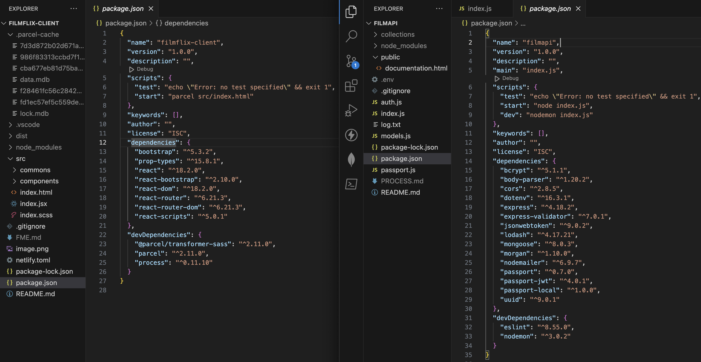
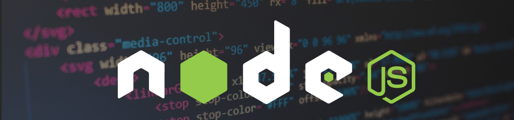
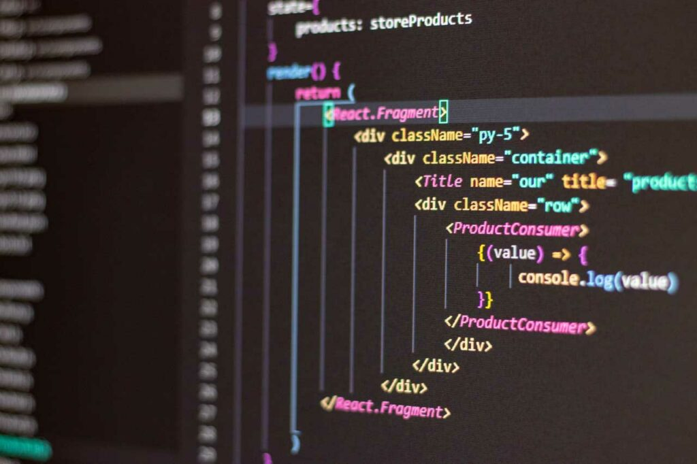

Setting Up the MERN Project:

Step 1: Project Initialization
Why was this step important?
Initializing the project laid the foundation for the entire development process.
It ensured I had a structured environment to work within.
Purpose and Impact
The goal was to create a basic project structure and set up the necessary dependencies.
This step directly impacted my ability to start development smoothly.
Technologies and Skills Employed
I utilized command-line interface (CLI) tools such as npm and npx.
Skills required included basic understanding of project setup and package management.
What went well? What didn’t go well?
- Efficient completion of server-side programming with Node.js.
- Successful setup of the backend architecture to handle data processing.
- Smooth integration of client-side programming with React.js for frontend development.
- Managing complex database queries for optimal performance.
- Debugging compatibility issues between different libraries and frameworks.
- Optimizing application performance to ensure seamless user experience.
Challenges and how I solved them
Ensuring compatibility among dependencies proved to be a challenge. I addressed
this by carefully reviewing version requirements and adjusting accordingly.
Decisions Process
As a requirement by the course curriculum, npm served as the designated package manager
for dependency management. Leveraging its widespread adoption in the industry,
I integrated npm to ensure compliance with course guidelines and facilitate efficient
collaboration. This decision aligned with industry standards and provided valuable experience
in utilizing essential tools for modern web development practices.

Step 2: Backend Setup (Node.js and Express.js)
Why was this step important?
Setting up the backend was crucial for establishing the server-side logic and
API endpoints required for interaction with the frontend.
Purpose and Impact
The goal was to create a robust backend architecture that could handle data
processing and serve as the communication bridge between the frontend and the database.
This directly impacted the functionality and performance of the application.
Technologies and Skills Employed
I utilized Node.js and Express.js for backend development, leveraging their asynchronous
nature and middleware capabilities. Skills required included server-side scripting and
API development.
What went well? What didn’t go well?
The backend setup progressed smoothly,
with efficient routing and middleware integration
I faced challenges in optimizing
database queries for performance, which required further refinement.
Challenges and how I solved them
Optimizing database queries posed a challenge due to the complexity of data retrieval
operations. I addressed this by analyzing query execution plans and indexing strategies
to enhance query performance.
Decisions Process
As part of the MERN (MongoDB, Express.js, React.js, Node.js) stack and a requirement
within the course curriculum, the integration of Express.js was indispensable.
Recognizing its integral role in the stack and its significance within the course
guidelines, I opted to implement Express.js for building RESTful APIs. This decision
was driven not only by its inclusion in the MERN stack but also by its reputation for
simplicity and flexibility in API development. Moreover, leveraging Express.js
ensured alignment with course objectives and provided valuable hands-on experience
with a widely-used technology within the context of full-stack development.
Step 3: Frontend Setup with React.js

Why was this step important?
Setting up the frontend with React.js was essential for creating a dynamic and
responsive user interface that interacts seamlessly with the backend.
Purpose and Impact
The goal was to develop a user-friendly frontend interface that enhances the user
experience and facilitates efficient interaction with the backend functionalities.
This directly impacted the usability and overall performance of the application.
Technologies and Skills Employed
For frontend development, I utilized React.js, leveraging its component-based
architecture and virtual DOM for building reusable UI components. Skills required
included front-end development, JavaScript, and knowledge of React.js framework.
What went well? What didn’t go well?
The frontend setup progressed smoothly, with efficient component rendering and state
management using React.js.
I encountered difficulties in integrating third-party libraries and managing state
across multiple components, which required additional troubleshooting and debugging.
Challenges and how I solved them
Addressing challenges in frontend development involved thorough debugging and testing,
along with the adoption of best practices for component composition and state management in React.js.
Decisions Process
Opting for React.js for frontend development was driven by its popularity, extensive
community support, and suitability for building modern, single-page applications.
This decision ensured alignment with industry standards and provided opportunities for
skill development in front-end technologies.
Step 4: Database Setup with MongoDB
Why was this step important?
Configuring the database with MongoDB was crucial for storing and managing application
data efficiently.
Purpose and Impact
The goal was to establish a scalable and flexible database architecture that could
accommodate the application's data requirements. This directly influenced data
management and retrieval processes within the application.
Technologies and Skills Employed
For database setup, I utilized MongoDB, a NoSQL database, leveraging its
document-oriented structure and scalability features. Skills required included
database management, MongoDB query language, and understanding of data modeling
concepts.
What went well? What didn’t go well?
The database setup proceeded smoothly, with successful configuration and
initialization of MongoDB collections and indexes.
I encountered challenges in designing optimal data schemas and implementing
efficient data querying strategies, particularly for complex data relationships.
Challenges and how I solved them
Overcoming database setup challenges involved careful analysis of data
requirements, normalization of data structures, and optimization of query
performance through indexing and aggregation pipelines in MongoDB.
Decisions Process
MongoDB for database setup was
informed by its scalability, flexibility, and compatibility with the Node.js
ecosystem. This decision aligned with the requirements of the MERN stack and
provided a robust foundation for data management in the application.
 gh repository
gh repository